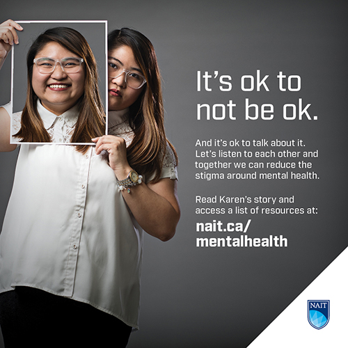
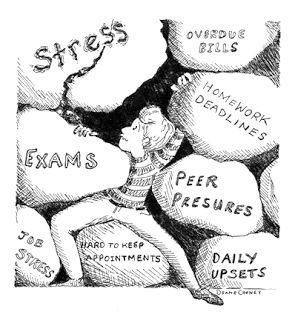
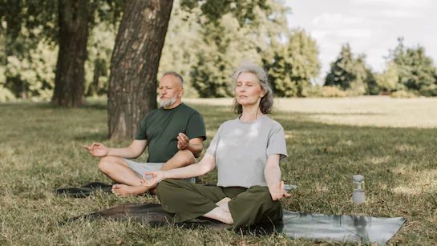
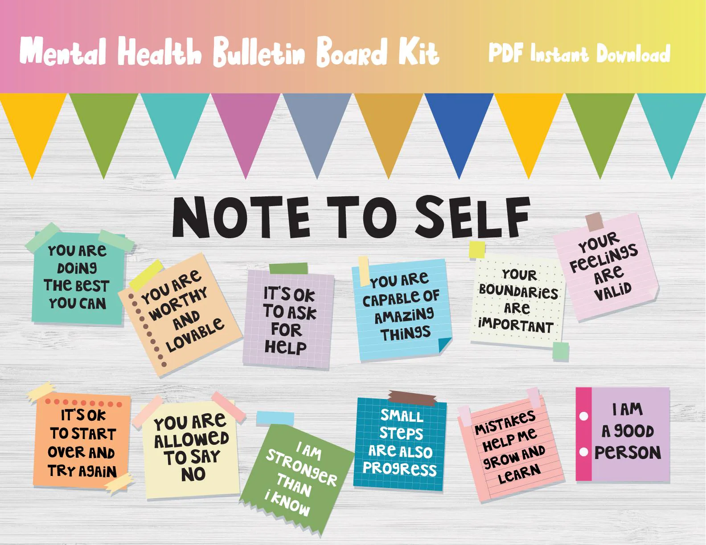
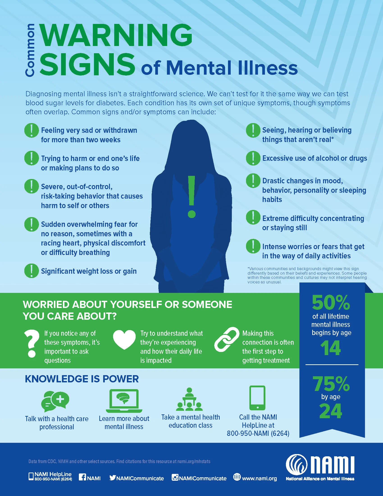

Strong minds grow in safe, calm spaces. Learn how to care for your mental health and support others.
Mental health is about how we think, feel, and handle stress in everyday life. Exams, social media, family pressure, and the future can all feel heavy, but simple habits, support, and open conversations help minds stay healthy and strong.
1 in 7Adolescents may live with a mental health condition.
Top 3Stress, anxiety, and low mood are leading student issues.
100%Every student deserves support, not shame.
Scroll or click a card below to jump to common issues, coping skills, getting help, media, gallery, feedback, and quiz.
Common Student Mental Health Issues
Exam stress and pressure to score high marks.
Worry about the future, family expectations, or finances.
Feeling low, empty, or losing interest in hobbies and friends.
Sleep problems from overthinking and late-night screen time.
Loneliness, bullying, or constant comparison on social media.
Healthy Coping Skills
Follow a simple routine with regular sleep, food, and study breaks.
Practise deep breathing, stretching, or mindfulness daily.
Move your body with walking, sports, or dance to release tension.
Limit doom-scrolling at night and keep your phone away from the pillow.
Write thoughts in a journal to understand worries and patterns.
Getting Help & Support
Talk to a trusted family member, teacher, or friend when overwhelmed.
Use school or college counseling services for confidential support.
Call verified helplines or use mental-health apps for quick guidance.
Visit a doctor or psychologist if low mood or anxiety lasts many weeks.
Join clubs or peer-support groups to feel connected and less alone.
Warning Signs to Notice
Sudden fall in marks, focus, or attendance compared to usual.
Big changes in sleep, appetite, or energy for more than two weeks.
Withdrawing from friends, activities, or always wanting to be alone.
Using gaming, social media, or substances only to escape feelings.
Thoughts like “nothing will improve” or not wanting to live.
How Friends Can Support
Check on friends who suddenly become quiet, angry, or different.
Listen without judging or comparing their problems.
Encourage them to reach out to adults or counselors.
Invite them for small walks, games, or group study sessions.
Take any talk of self-harm seriously and inform a trusted adult.
Everyday Mind-Care Habits
Write two or three things you are grateful for each night.
Break big tasks into small, realistic steps.
Spend time in green spaces, sunlight, and fresh air.
Say “no” to extra tasks when you are already overloaded.
Remember that asking for help is a sign of strength, not weakness.
🎬 Mental Health Awareness
This short video shows how students use routines, breathing, friendships, and counseling support to manage stress and keep their minds balanced.
📸 Green Mind Gallery

Campus campaign: “It’s OK to Talk”

The stress many students hideSafe room for honest conversations

Breathing and stretching under treesWalk-and-talk with a trusted friend

Noticeboard with simple mind-care tips

Workshop on recognising signs earlyJournaling corner with calm green vibes
When Minds Get Support
Schools that support mental health with counseling, peer-support, and regular activities see better attendance, stronger focus, and fewer crises among students.
1 in 4
Young people may face a mental health issue before 18.
↓ stress
Daily coping habits reduce exam stress and burnout.
↑ help
More students seek help when stigma is reduced.
24/7
Online tools and helplines support students anytime.
1 step
The first step is simply saying, “I need to talk.”
Test Your Knowledge — Mental Health Quiz
Points: 0
Streak: 0
Leaderboard — Top Scores
Top 3 scores stored locally.
Answer explanation
💬 Share Your Thoughts
Tell how this mental health hub helped you, or share ideas to make your school or college a calmer, kinder space for minds.
Why your voice matters
Helps schools understand what students really feel and need.
Encourages more mental-health sessions, clubs, and safe spaces.
Shows other students they are not alone when they struggle.
Your story = someone’s courage
Sharing honestly about stress or sadness can give courage to others to ask for help instead of suffering in silence.